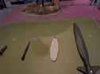

4. Flint dagger from Bruinehaar-Lokbelt (near Haaksbergen), ca. 11,000–3,000 BCE



Here you can see a flint dagger from Bruinehaar-Lokbelt, near Haaksbergen. The dagger dates back to prehistoric times and is made of light-colored flint, likely from northern Germany or Denmark. Its nearly white color and smooth surface make this piece particularly striking.
The dagger is long, slender, and beautifully symmetrical. To make it, a craftsman selected high-quality flint, free of cracks or imperfections. He then used antler as a tool. A narrow antler pin was placed against the stone, exactly where a long, thin piece needed to be chipped away. Using a hammer made of antler or wood, he struck that pin. This caused the flint to break into long, narrow pieces. From one of those pieces, he fashioned the blade of this dagger. He then carefully refined it further until the shape was sleek and uniform.
A flint dagger like this was more than just a tool. Its careful shape, distinctive color, and fine craftsmanship suggest an object of status. Perhaps it belonged to someone of high standing, or played a role in rituals. It demonstrates just how advanced the level of craftsmanship was even in prehistoric times.
We’re now heading to the Pracht en Praal cottage, where some of the most beautiful artifacts from Twente and the eastern Netherlands are on display.
The next audio clip is about the three large flint axes from Collendoorn near Hardenberg.